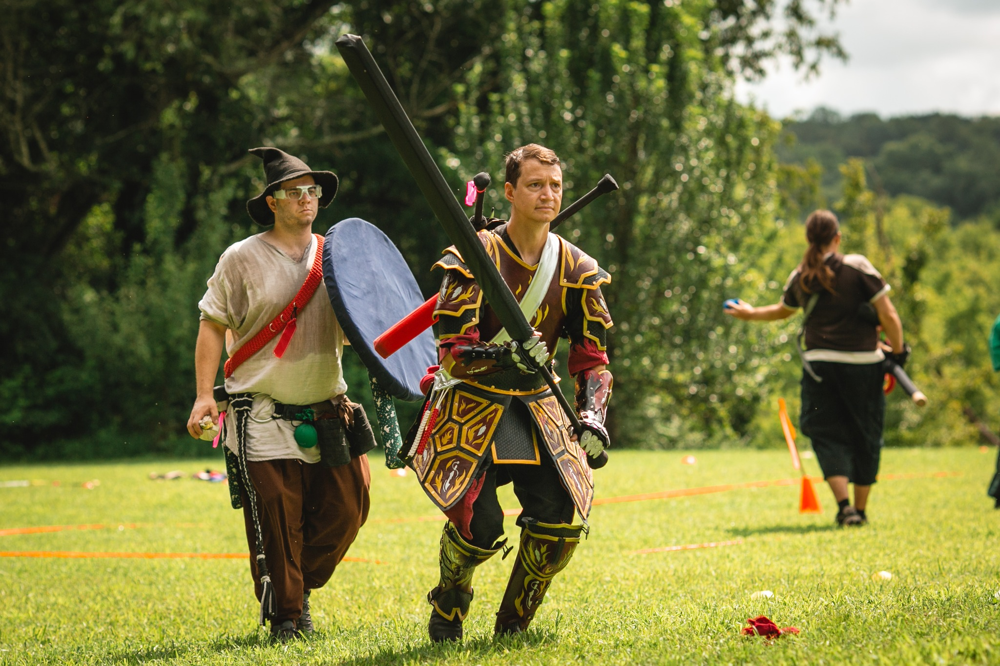
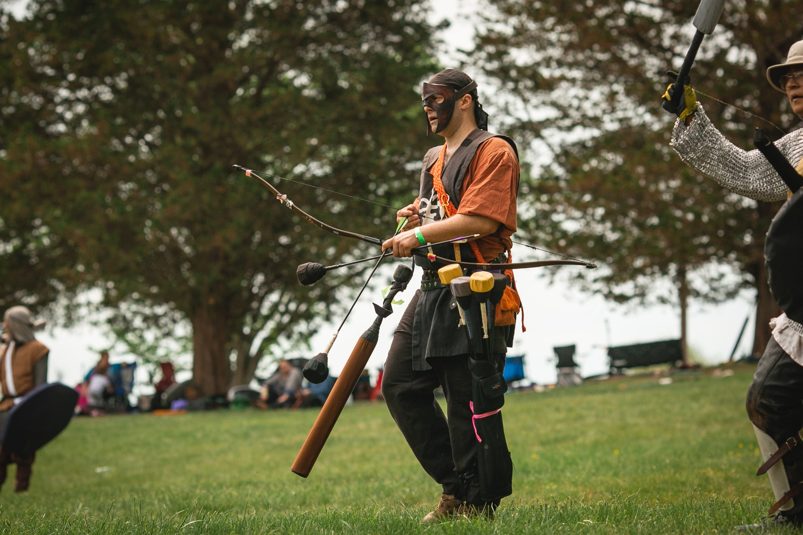
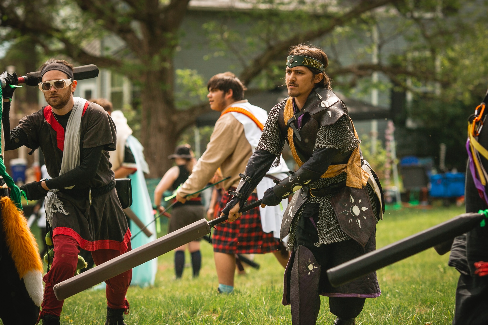
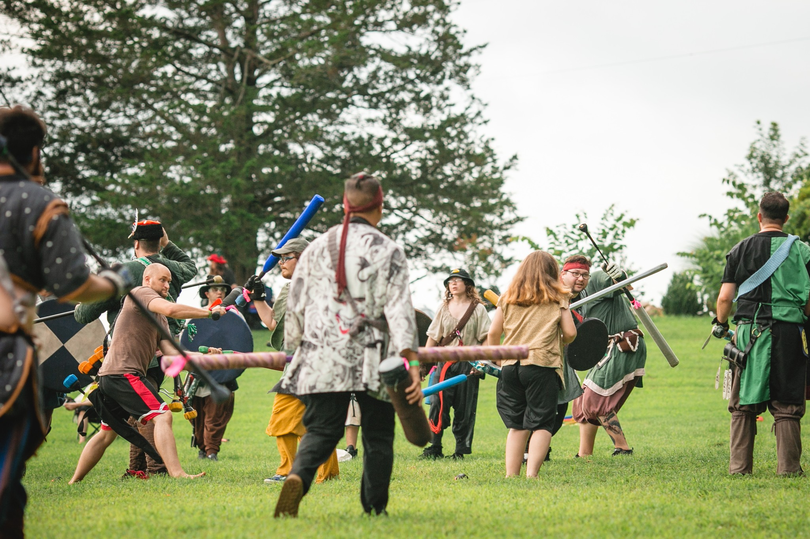
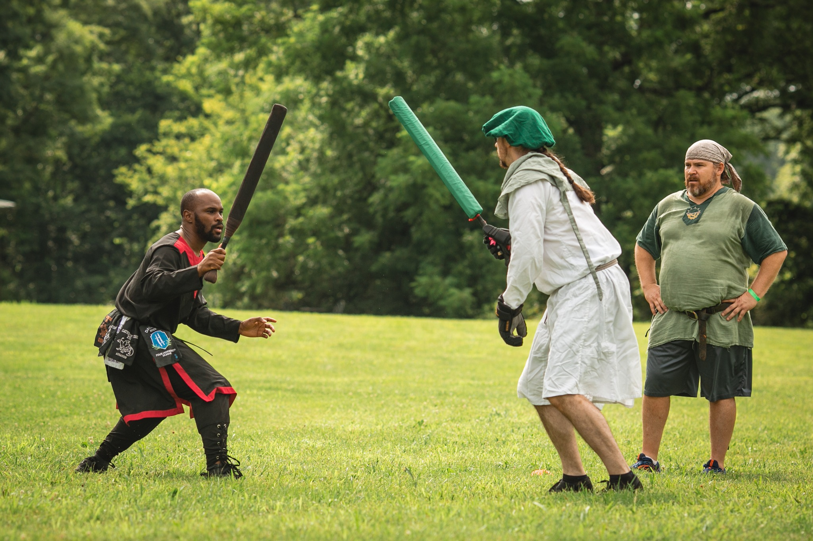
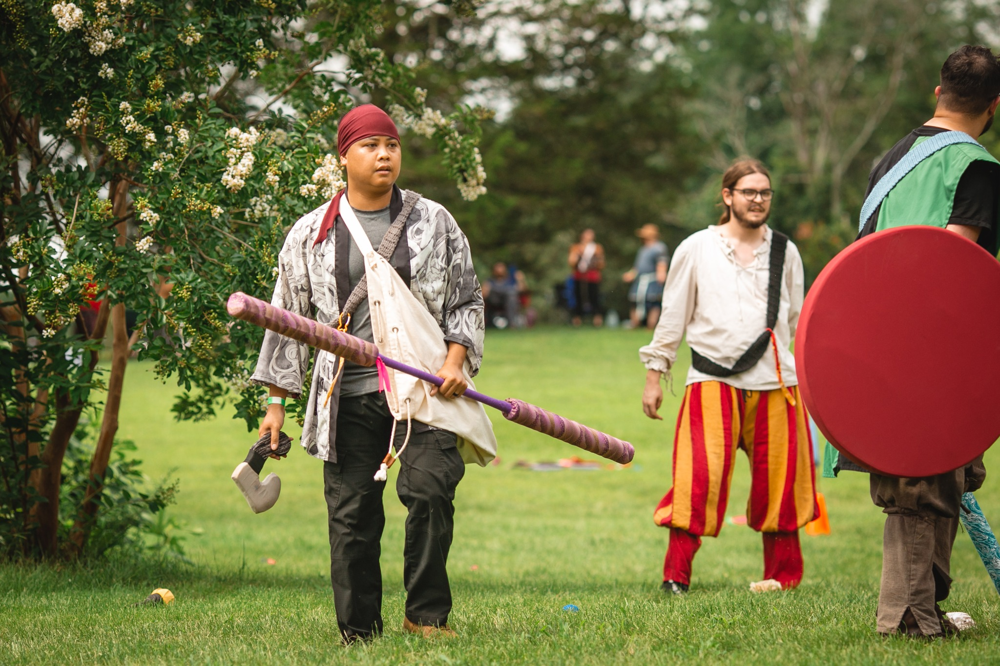

✶
A worldwide fellowship of foam, steel and honor
✶
Folio I · The Chronicle ofAmtgard
Every weekend, on fields from El Paso to Helsinki, peasants
become paladins. Wizards hurl spells of bright cloth. Healers
raise the fallen. Steel — the gentle kind, padded and true —
sings against shield. You are invited.
Folio IIWherein the curious traveler is told what manner of thing this is
A game of honor, played in the open air, with weapons that do not bite.
Amtgard is a live-action roleplaying
game of medieval and fantasy combat — a sport, a craft, and a
chosen family wrapped together. Foam-padded swords stand in for
steel; bright-coloured cloth balls for fireballs; and a thousand
small kindnesses for the chivalry of a long-vanished age. It is
played for free, every weekend, on a public field near you.
Begin as a peasant with nothing but a borrowed blade. Climb,
duel and quest your way to knighthood. Choose a class — warrior,
wizard, healer, scout, druid, paladin — and grow the deeds of
your persona through the years. Stitch your own garb.
Carve your own crest. Captain a company. Reign as a monarch.
We have no gatekeepers, no audition, and no costume bar. Show up
in jeans and a t-shirt and someone will hand you a sword,
explain the rules in eight minutes, and call you cousin
by sundown.
Folio III
Choose thy calling
Twelve archetypes await — split between the magic-users and
the martial classes. Some march in steel, some in robes, some
not at all. Hover a tome to learn its art.

— a plate by hand
The marshal and the magister. The class-line of
Amtgard runs from the heaviest plate ever hammered out of a
backyard anvil to the wide-brimmed hat of the wandering
spell-tome. Both are welcome on the same field at the same
hour.
i— martial —
Warrior
The line that holds.
Plate, large shield, and the full armoury of melee. The
Warrior is the keystone of the shield-wall and the
anchor of the open duel — Harden the kit,
Shake It Off, and stand when others kneel.
Simple to take up; a lifetime to perfect.
Harden · Shake It Off
True Grit · Ancestral Armor
Purple sash · 6 armour
ii— magic-user —
Wizard
Cloth-fire and cleverness.
A memorised tome and a fistful of bright cloth. The
Wizard chooses the day's loadout from spells of
Flame, Spirit, and Subdual —
Force Bolt across the field, Entangle
the charging knight, Teleport clear when the
line breaks. Range, control, and a quick wit.
Force Bolt · Entangle
Suppression Bolt · Teleport
Yellow sash · no armour
iii— magic-user —
Healer
No one falls alone.
White cloth and a steady count return wounded allies to
the field. The Healer mends with Heal, lifts
curses with Release, and shields the line with
Blessing Against Wounds. Beloved by every army
that has ever drawn breath.
Heal · Blessing Against Wounds
Release · Adaptive Blessing
Red sash · no armour
iv— martial —
Scout
Loose at three hundred paces.
Bow, blade, and field-craft. Scouts work the flanks —
Tracking the enemy's shape, Shadow Step
through the gap, Pinning Arrow to fix a runner
where they stand. A small kit that turns a war from a
hundred feet away.
Tracking · Shadow Step
Pinning Arrow · Dispel Magic
Green sash · 3 armour
v— martial —
Monk
Empty hand, full heart.
No shield and the lightest of kit, only the staff and a
vow of simplicity. The Monk turns arrows aside with
Missile Block, claims a spot of stillness with
Sanctuary, and alone among the orders calls the
fallen back with Resurrect. Patience is the
weapon.
Missile Block · Sanctuary
Resurrect · Heal
Grey sash · 1 armour
vi— magic-user —
Druid
The grove answers.
Half-healer, half-shaper. The Druid roots the unwary in
foot-thick Entangle, hardens an ally's kit
with Barkskin and Imbue Armor, and
mends wounds with a quiet Heal. Versatile,
evergreen, and quietly indispensable.
Entangle · Barkskin
Imbue Armor · Heal
Brown sash · no armour
vii— martial —
Paladin
Bright sword, brighter oath.
A reserved order, taken only after long service in
another class. The Paladin marries plate and shield to a
small handful of holy graces — Awe the foe,
Greater Heal the wounded, Greater
Resurrect the lost, and Protection from
Magic for those who stand close. Bound by code;
bright by design.
Awe · Greater Heal
Greater Resurrect · Protection from Magic
Reserved · 6th level · gold sash · 4 armour
viii— martial —
Anti-Paladin
A blade against the light.
The Paladin's mirror — a reserved order of steel and
disruption, won only after long service elsewhere. The
Anti-Paladin presses the line with Brutal
Strike and Flame Blade, unsettles it with
Terror, and draws strength from the
already-fallen with Steal Life Essence.
Aggression as discipline.
Terror · Brutal Strike
Flame Blade · Steal Life Essence
Reserved · 6th level · silver sash · 4 armour
ix— magic-user —
Bard
Songs that sharpen swords.
The hardest class to play, and the most beloved when
played well. The Bard rallies the line with
Song of Determination and Song of
Battle, lifts a kneeling friend with
Greater Release, and turns the day with a
well-aimed Insult. Keeper of the chronicle you
read at year's end.
Song of Battle · Song of Determination
Greater Release · Insult
Blue sash · no armour

x— martial —
Archer
Specialist of the long shot.
Bow first, blade second, kit kept light. Where the Scout
has speed, the Archer has reach and an inventory of
enchanted shafts — Destruction Arrow against
shield and plate, Pinning Arrow to stop a
runner, Phase Arrow through the cleverest
cover. Reload and again.
Destruction Arrow · Pinning Arrow
Phase Arrow · Reload
Orange sash · 2 armour
xi— martial —
Assassin
A step the line never sees.
Stealth, mobility, and the timed strike. The Assassin
slips through the wall with Shadow Step and
Blink, stalls a foe with Hold Person,
and marks a target with Assassinate. Hooded,
light-footed, and gone before the call goes up.
Shadow Step · Blink
Hold Person · Assassinate
Black sash · 2 armour
xii— martial —
Barbarian
A storm of axe and lung.
The wild line-breaker — war-painted, medium shield, kit
kept light. The Barbarian counts Rage aloud
through shields and armour, opens a path with
Berserk and Brutal Strike, and shrugs
off a wound with Adrenaline. Momentum where
finesse will not avail.
Rage · Berserk
Brutal Strike · Adrenaline
White sash · 3 armour
Twelve archetypes in all. The Reeve (the rules-keeper, hat
askew) and the humble Peasant (the default state, from whom
all knights begin) are not classes but stations of the field.

Field Report · Spring War, Folio MMXXV
“
I came to the park in jeans and an old t-shirt. They handed me
a sword, taught me to die well, and called me cousin
before sundown.
— a squire of the Iron Mountains, recruited 14 days prior
Folio IV
The known world
One Game, many crowns. Twenty-three sovereign Kingdoms divide
the map between them, each with its own court, calendar of
wars, and famous houses. Six are listed here.
♛
Burning Lands
The First Kingdom · est. 1983 · El Paso, TX
Where it all began. The crucible of every rule and tradition.
Hosts the Gathering of the Kingdoms in the New
Mexico mountains — the oldest event on the calendar.
♛
Emerald Hills
The Second Kingdom · est. 1988 · DFW & the plains
The second crown to be raised. Spans north Texas, Oklahoma
and Arkansas, and fields one of the densest concentrations of
knights in the known game.
♛
Iron Mountains
Kingdom in 1992 · Colorado highlands
Thin air, sharp wits, and famous mountain wars. Hosts
Rakis, the summer coronation held among the dunes
and ponderosa of the high country.
♛
Goldenvale
Kingdom in 1995 · New England
Founded in New Hampshire and grown across the
stone-walled north-east. Disciplined courts, harsh winters,
and a tradition of long-form rapier.
♛
Crystal Groves
Kingdom in 2007 · the Mid-Atlantic
Maryland to Pennsylvania. Genteel courts, fierce duels, and
a tournament tradition that draws fighters down from the
New England courts every spring.
♛
Northern Lights
Kingdom in 2012 · Cascadia & British Columbia
They fight in mist. They fight in fern. They are unbothered.
Western Washington and the Canadian coast — the youngest
kingdom on this page, and one of the fastest growing.
An alternate view of the same Folio. The realms plotted by
where they meet — six at a time, cycling through every
kingdom of the chartered world.
Burning Lands
El Paso, TX
est. 1983 · The First Kingdom
Emerald Hills
Dallas-Fort Worth, TX
est. 1988 · The Second Kingdom
Iron Mountains
Denver, CO
Kingdom 1992 · the high country
Goldenvale
Nashua, NH
Kingdom 1995 · New England
Wetlands
Houston, TX
the Gulf coast court
Polaris
Minneapolis, MN
the northstar realm
Celestial
Austin, TX
central Texas · hosts Spring War
Dragonspine
Las Cruces, NM
the high desert
Crystal Groves
Hagerstown, MD
Kingdom 2007 · the Mid-Atlantic
Westmarch
Los Angeles, CA
SoCal sun-coast
Northern Lights
Seattle, WA
Kingdom 2012 · Cascadia & BC
Northreach
Anchorage, AK
the farthest crown
Neverwinter
Central Florida
the southern court
Rising Winds
Indianapolis, IN
the heart of the Midwest
Black Spire
Portland, OR
the rainforest realm
Desert Winds
Phoenix, AZ
the Sonoran kingdom
Tal Dagore
St. Louis, MO
on the Mississippi
Rivermoor
Kansas City, MO
the broad plains
Golden Plains
Amarillo, TX
the Texas panhandle
Viridian Outlands
Spokane, WA
the inland Northwest
Winters Edge
Atlanta, GA
the southeastern court
Nine Blades
Toronto, ON
the Canadian crown
13 Roads
Springfield, IL
the prairie crossroads

Folio IV·V · The melee
Twelve in the local park. Six hundred at the Spring War.
The rules of the field do not change.
What begins on a public lawn behind your library scales,
unbroken, to the largest interkingdom war on the calendar.
The same eight-minute rules tutorial. The same honor count.
The same weapons of foam and faith.
Folio V
The great wars
Twice a year, Amtgarders pack their tents, their banners,
and a half-finished poem and converge on a single field for
a week of war, feast, court, tournament and song.

The single list, dawn
Single-elimination tournaments run through the morning
while the war proper musters at noon. The patches on his
tunic are wars he has fought.
I
Gathering of the Kingdoms
Burning Lands · Mayhill, NM · the oldest
The first interkingdom event, run continuously since
1985 (formerly Gathering of the Clans). A week of
company battles, single-class tournaments, court, feast
and the famous midnight torch-march.
II
Spring War
Celestial Kingdom · central Texas · April
One of the four interkingdom pillars. Hundreds of
fighters muster on a Texas field for company battles,
a champion's list and a brackets-deep tournament that
runs from dawn to torchlight.
III
Rakis
Iron Mountains · Colorado · summer coronation
The mountain war. Fighters camp at altitude on the
Front Range, throw down for the crown, and pioneer
Jugging — Amtgard's wildest team sport — in
the late afternoon.
IV
Olympiad
Rotates among Kingdoms · biennial · the championships
The travelling tournament. Each cycle, a different
Kingdom plays host, and champions of every weapon
style — flower, longsword, sword-and-shield, polearm,
bow — converge to crown the year's best.
Folio V·I · Interlude
Three hundred paces. One arrow. Hold breath.
Every kit is hand-built. The bow is wood or laminate,
thirty-five pounds of draw at most. The arrow is
foam-tipped and fletched true. The hood, the hauberk,
the quiver — all stitched by the player who wears them,
or traded for at the war-camp.
Every blade in Amtgard is built by hand: a fiberglass or
kitespar core, wrapped in closed-cell foam, sealed in
strapping tape. Most fighters make their own. Here is the
starter armoury.
Short blade
up to 36 in. · single-handed · the everyman's sword
The first weapon of every newcomer. Quick, forgiving,
easy to make from kitespar, foam and a roll of strapping
tape.
Great weapon
over 4 ft, up to 6 ft · two-handed · line-breaker
Reach, leverage, drama. The two-handed blade is the
calling card of the line-breaking warrior.
Bow
≤ 35 lb. draw at 28 in. · padded arrows · no compounds
Foam-tipped, fletched true, and absolutely lethal across
an open field. Patience and angles win wars.
Shield
buckler to tower · five legal classes · padded edge
Buckler, small, medium, large, tower — the shield is half
art, half armour, and the cornerstone of any line.
Spellball
soft cloth · colour by school · the magic-user's tool
A bright-coloured cloth ball is your lightning bolt, your
flame strike, your magic missile. Throw true, throw often.
Quarterstaff
5 – 6 ft. · two-handed · the monk's friend
Long, light, devastating in trained hands. Widely cited
as the strongest weapon on the field, and the Monk's
weapon of choice.
Folio VII
The arts & sciences
Half the game is fought on the field. The other half is made
in the workshop, the kitchen, the scriptorium, and the
campfire ring after dark — and is judged at every event,
with prizes and titles that travel further than the sword.

Field portrait, Folio MMXXV
Every garment on this field was sewn by the player wearing
it, traded for at the war-camp, or willed down through a
household that has carried the same colours for twenty years.
i
Garb & Costuming
Threadborne, head to hem.
Tunics, kirtles, surcoats, hoods, cloaks, chausses. Most
players sew their own — by hand if patient, by machine if
not. A persona's whole biography is told in cloth and
cut, and the field is a parade of it.
Linen · wool · bone needle · the slow hand
ii
Armoursmithing
Plate, scale, chain, ring.
Hand-tooled bracers. Riveted maille that rings when you
walk. Pauldrons hammered out of cold-rolled steel on a
backyard anvil. Many fighters wear armour built by their
own grandparent's tools.
Steel · brass · ring & rivet · the long evening
iii
Leatherwork
Hide, awl, beeswax.
Sword-belts, scabbards, pouches, bracers, masks. Wet-form
a vegetable-tanned hide on a Friday night and by Monday
you'll have a piece of armour that will outlive the
tournament that calls for it.
Veg-tan · awl · saddle stitch · the patient palm
iv
Calligraphy & Illumination
Quill, gilt, vellum.
Every knighting comes with a hand-lettered scroll. Every
kingdom keeps a college of scribes who pen the awards in
blackletter and lay gold leaf around the initials. The
scriptorium is older than the field, and quieter.
Open-fire roasts. Honey-glazed root vegetables in cast
iron. Bread baked in a tin oven beside the war-camp.
Period menus drawn from Le Viandier and the
Forme of Cury, served at long trestles after
sundown.
Cast iron · open coals · honey, mead, beef · the slow heat
vi
Bardic Arts
Voice, lute, fire-lit hour.
Songs of the day's battles, written that afternoon and
sung that night. Original poetry. Sagas in Old-English
metre. A juggler at the back of the circle, a storyteller
at the front. Bardic competitions are judged with as much
seriousness as the sword tournaments.
Lute · drum · ink · the long memory
— and many more besides: heraldry & banner-painting,
woodworking & bowyering, fletching, brewing & vintnery,
embroidery, jewelry-smithing, dance, glasswork. Every kingdom
keeps its own roll of Masters in each art.
Folio VIII · the call
There is a park near you. Walk to it.
Amtgard chapters meet every Saturday or Sunday on public ground
across the United States, Canada, and as far afield as Germany,
Croatia, Korea and Finland. Most have a loaner sword waiting
for you. Most will teach you to use it before the first hour
is out. None will ask you to pay a copper to fight.
Free. No dues. No buy-in. Forever.
Loaner gear. Show up empty-handed. Leave armed.
Eight-minute rules. The whole game, taught at the field.
All ages. Children play. Grandparents play. Knights are ageless.